第1章：毎日の「日報地獄」

パニっくん
あーーーっ、もう！！今日もクタクタになるまで働いたのに、これから顧客データまとめて日報作って、チャットに報告しなきゃいけないの！？もう20時半だよ！？早く帰ってビール飲みたいのに！！
ウパ博士
パニっくん、目が血走っていますよ。キーボードを叩く指に憎しみがこもっていますね

パニっくん
だって博士！現場の仕事が終わった後に、わざわざパソコン開いて『今日の顧客は〜』って打ち込むの、本当に苦痛なんだよ！しかもちょっとでも遅れると怒られるし…。俺は事務作業をするためにこの案件を請けたんじゃないのに！

ウパ博士
その気持ち、痛いほど分かりますよ。実は私も昔は、毎晩ため息をつきながら日報をポチポチ打っていました。
でも今は、パソコンさえ開いていれば、私が指定した時間にAIが勝手に日報を作って、勝手にチャットに報告してくれているんです

パニっくん
えっ！？なにそれ！？幽霊でも雇ってんの！？
ウパ博士
いいえ、『AI』を使っただけです。実は、どんな仕事でも『4つのステップ』に切り分けると、AIに仕事を丸投げできる可能性がグッと高まるんです
第2章：自動化の4ステップ
パニっくん
4つのステップ…？俺、パソコンの難しい設定とか無理だよ？『えらー』って出た瞬間に泣きそうになるもん
ウパ博士
大丈夫です。小難しい知識なんて一切いりません。噛み砕いて説明しますね。仕事を自動化するには、次の4つの順番で考えるだけでいいんです
- トリガー（きっかけ）：いつ、AIに動き出してもらうか？
- 情報源（データ）：AIに、何を見させればいいか？
- 処理する場所（作業場）：どこで、その作業をやらせるか？
- 通知先（ゴール）：出来上がったものを、どこに届けさせるか？

パニっくん
とりがー…？なんかピストルみたいな名前だね
ウパ博士
まさに『よーい、ドン！』のピストルです。私が日々やっている『日報作成・報告』の仕事に当てはめてみましょうか
- トリガー：毎日「20時30分」になったらスタート！
- 情報源：今日の顧客情報が入力されている「シート」を見る。
- 処理する場所：インターネットの画面上で、AIに情報をまとめさせる。
- 通知先：まとめた日報を指定したチャットに送る。

パニっくん
おおっ！なんかこうやって整理すると、すごく簡単そうに思えてきた！でもさ、これをAIにやらせるって、具体的にどうすればいいの？
第3章：マネージャーと画面の中の小人
ウパ博士
ここで登場するのが、2つの強力な秘密兵器です。『Claude Cowork（クロード・コワーク）』と『Claude in Chrome（クロード・イン・クローム）』です。

パニっくん
出たよ横文字！クロードなんちゃら！もう頭痛い！
ウパ博士
ストップ、パニっくん。耳を塞がないで（笑）。難しく聞こえますが、実はただの『優秀なマネージャー』と『画面の中に住む小人』なんです
ウパ博士
この2つを実際に使うには、大事な前提があります。どちらも、Claudeの有料プラン（Proプラン以上）でないと使えません
パニっくん
なんだよ、結局タダじゃないのか……
ウパ博士
便利な機能には、どうしてもコストがかかります。ただ、月額3,000円前後なら、ラーメン2〜3杯分を我慢すれば手の届く金額です。今、世界を変えている最先端のAIを相棒にして時間を浮かせられると考えれば、安いものだと私は感じています。Claude CoworkとClaude in Chromeの威力は、これから先の説明で実感してもらえるはずです
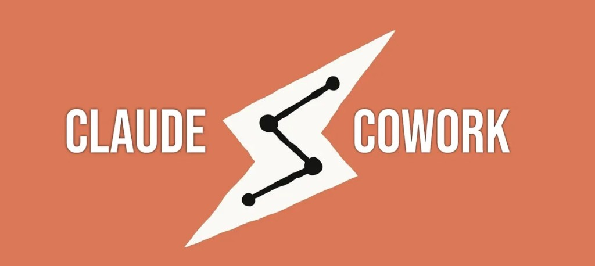
ウパ博士
Claude Cowork（優秀なマネージャー）
これは、プログラミング不要であなたに代わって自律的に動いてくれる司令塔（エージェント）です。さっきの4ステップをこのマネージャーに『毎日20時半になったら、シートを見て、日報を作って、チャットに送ってね』と一回お願いするだけで、あとはスケジュール通りに全部仕切ってくれます。
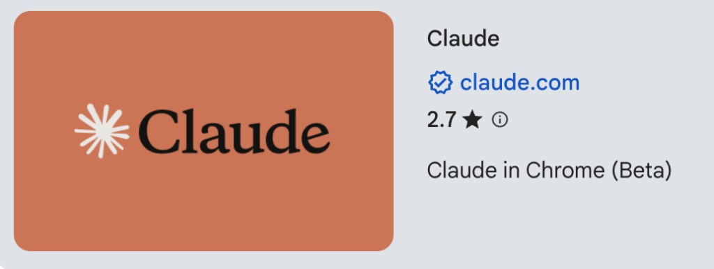
ウパ博士
Claude in Chrome（画面の中に住む小人）
パニっくん、普段インターネットを見るときGoogle Chrome（グーグルクローム）を使っていませんか？この小人は、そこにポンッと住み着いて、あなたに代わって画面を見て・操作するお助けロボットです（※世間ではこれを「拡張機能」と呼びます）。ストアやリリースノートではClaude for Chromeと書かれることもあります。
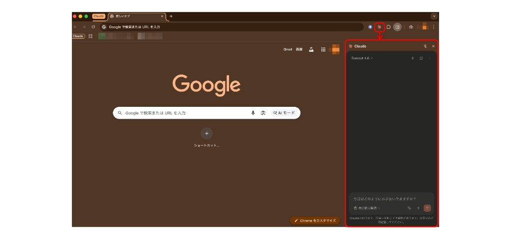

パニっくん
えっ！？つまり、マネージャー（Cowork）が『決まった時間』に動き出して、画面の中の小人（Claude in Chrome）がシートを見て、日報の文章はマネージャーの画面に返ってきて……最後はチャットに投げる、みたいなイメージ！？
ウパ博士
イメージとしては、だいたい合っています。細かいところまで「必ずこう」と決まっているわけではないので、あくまでイメージとして受け取ってください。……それと、私が普段やっていることはかなりマニアックなことで、全員に当てはまることじゃないんです
第4章：ウパ博士の「本番」ーパニっくんの本音
ウパ博士
私がやっているのは、さっきの4ステップを一本につないだ自動化です。
- トリガー：毎日20時30分
- 情報源：Googleスプレッドシート
- 処理：Claude in ChromeとClaude Coworkの共同作業
- 通知先：Slack（チャットツール）の指定したチャンネル
コツは、4つに分けた流れだけでなく、AIが読みやすいように整えたシートを用意し、指定した計算式で毎回同じ形の出力になるよう組んでいることです。初期設定はそれなりに手間がかかりますが、一度仕上げればあとは自動で回るので、運用はかなり楽になります。
パニっくん
待て待て待て！！そんなマニアックなことやってる人、周りにいないよ！？Googleスプレッドシートとか Slackって聞くだけで胃がキリキリする！博士の本番の話、正直あんまり参考にならないんだけど！？
ウパ博士
……鋭いですね。そして、そのツッコミはほとんどの人の本音だと思います。なので今日は、誰でもすぐに試せる具体例と手順書を用意しました。Claude CoworkとClaude in Chromeを、いきなり本番フルではなく、練習で使ってみるイメージです。そうやって「マネージャーに預ける感覚」と「小人に画面を見せる感覚」を、先に体に染み込ませていきましょう
パニっくん
なるほど…まずは道具の感覚を掴む練習ってことか！で、その具体例と手順は？
第5章：誰でも同じ手順で試せる「日報作成自動化ロードマップ」
5-1. 具体例のざっくり説明
ウパ博士
これからやっていただく練習課題はこうです。「Claudeに、今日やったことが並んだ表（Googleスプレッドシート）を渡して、日報を書いてもらう」練習用のGoogleスプレッドシートは私が用意しておりますので、皆さんの方で用意する必要はありません
パニっくん
さすが博士！！！
5-2. そもそもの準備（環境をそろえる）
ウパ博士
早速やっていきたいところですが、パソコンにインストールしておく必要があるアプリがあるので、1つずつ準備していきましょう！何も難しくないので、一つずつ焦らずにやっていきましょう！
＊ここから先はパソコンでの操作になります。パソコン上でこの図解を開きながら作業を進めるのがオススメです。
- ①パソコン（macOS または Windows）の準備
-
②Google Chromeをダウンロード
- Claude in Chrome は Google Chrome 専用です。Google Chrome のダウンロードがお済みでない方は、下記リンクからダウンロードをお願いします。
- リンク: Google Chrome ダウンロード
-
③Claude デスクトップアプリをダウンロードし、有料プラン（Pro 以上）に契約
Claude Cowork の利用には、Claude デスクトップアプリと有料プランへの契約が必要です。Claude in Chrome も公式の説明どおり有料プランが必要です。まだの方は下記リンクからダウンロードと、有料プランへの契約をお願いします（お試しの場合は Pro プランをお勧めしています）。
- リンク: Download Claude（公式ダウンロードページ）
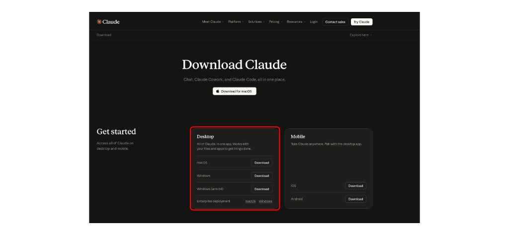
- リンク: Plans & Pricing（Claude）
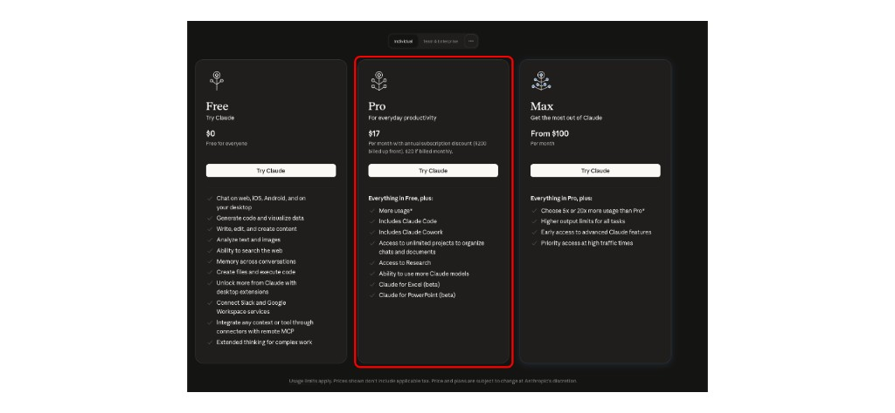
- リンク: Download Claude（公式ダウンロードページ）
-
④Claude in Chromeの準備
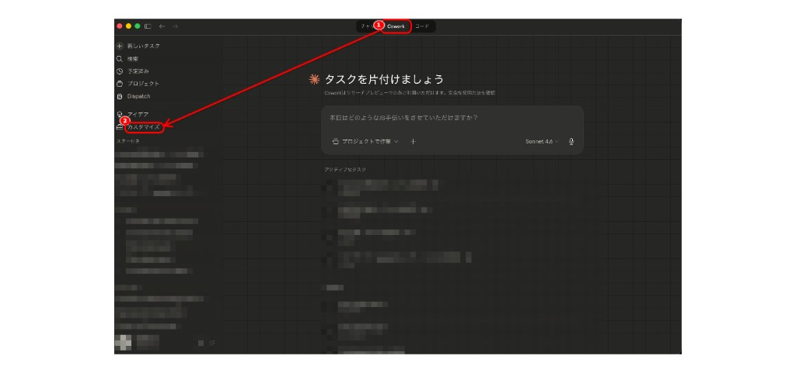
① 上部の Cowork を選ぶ → ② 左の「カスタマイズ」を開く 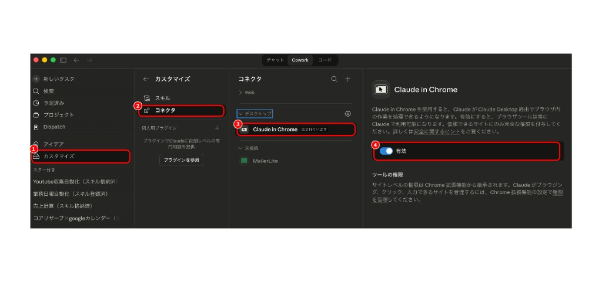
①「カスタマイズ」→ ②「コネクタ」→ ③「Claude in Chrome」を選ぶ → ④「有効」をオンにする 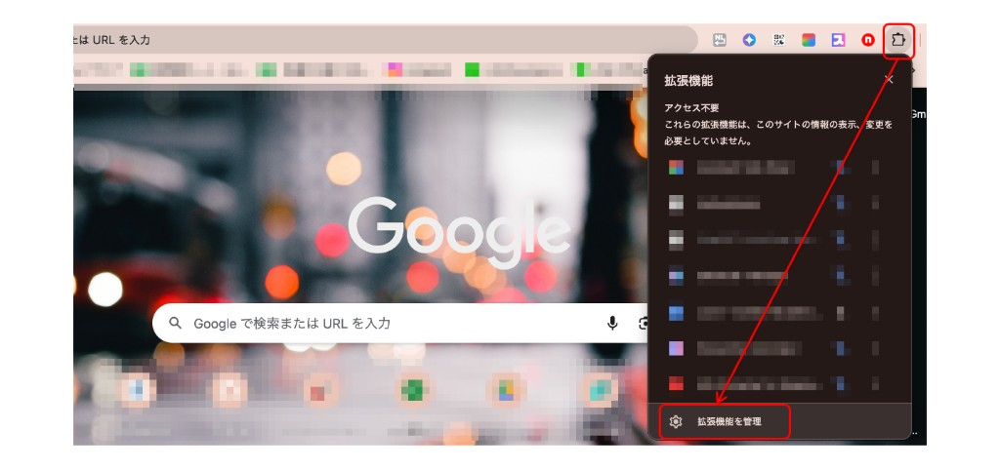
右上のパズルアイコン（拡張機能）を開き、「拡張機能を管理」を選ぶ 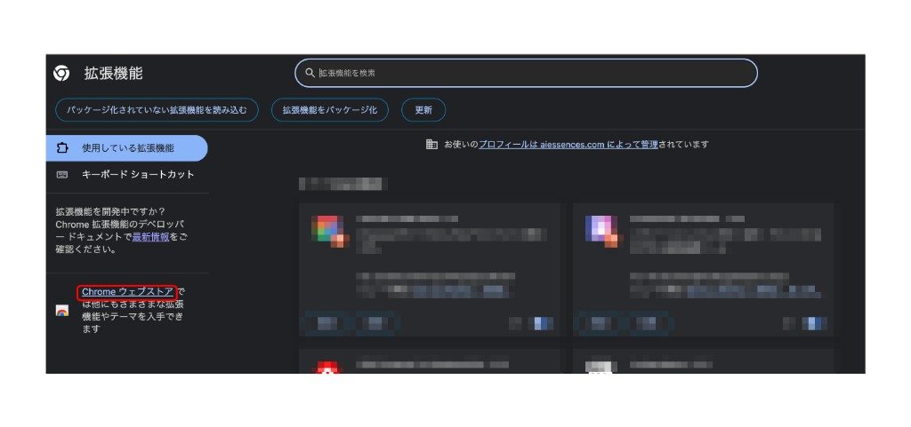
拡張機能の管理画面で「Chrome ウェブストア」を開く 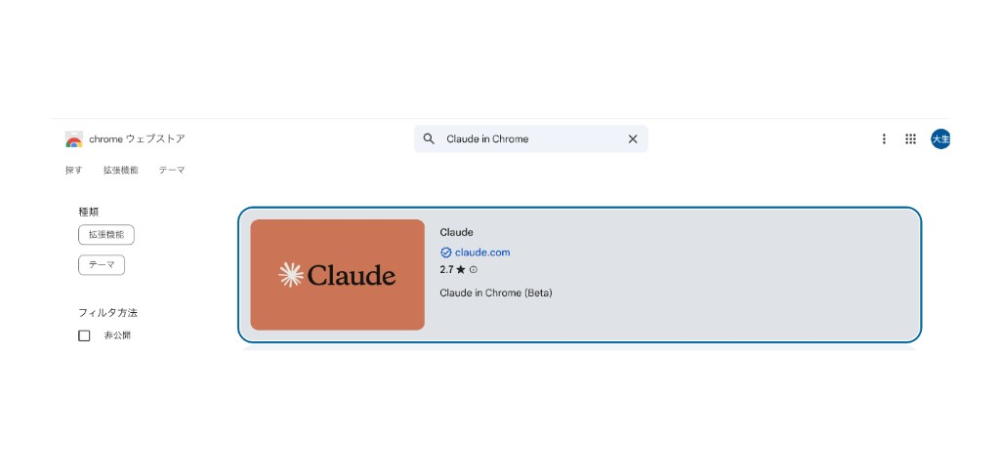
検索で「Claude in Chrome」と入力し、公式の「Claude」拡張機能を選ぶ 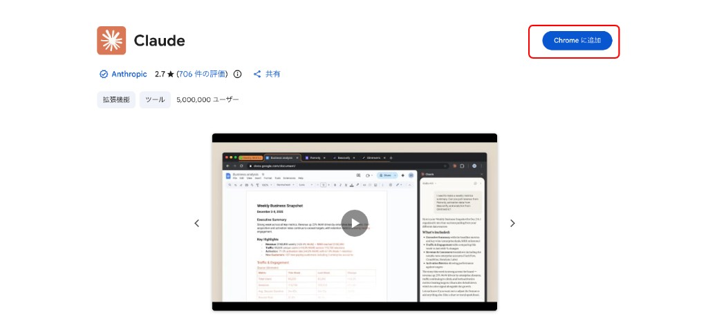
「Chrome に追加」で拡張機能をインストールする 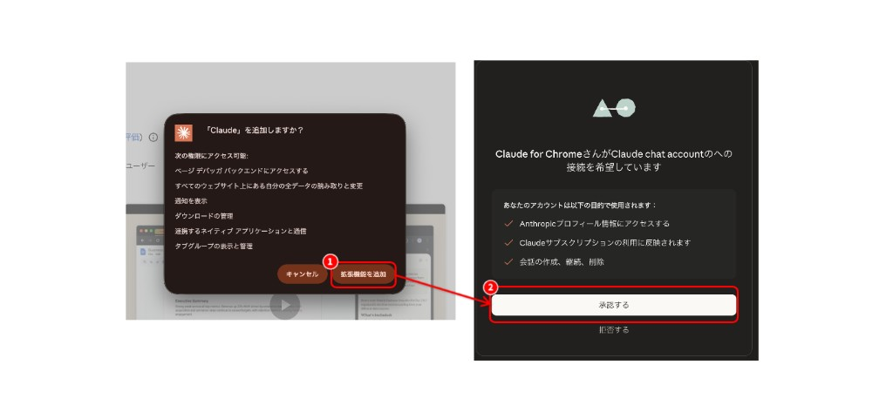
①「拡張機能を追加」→ ②「承認する」でアカウント連携を完了する 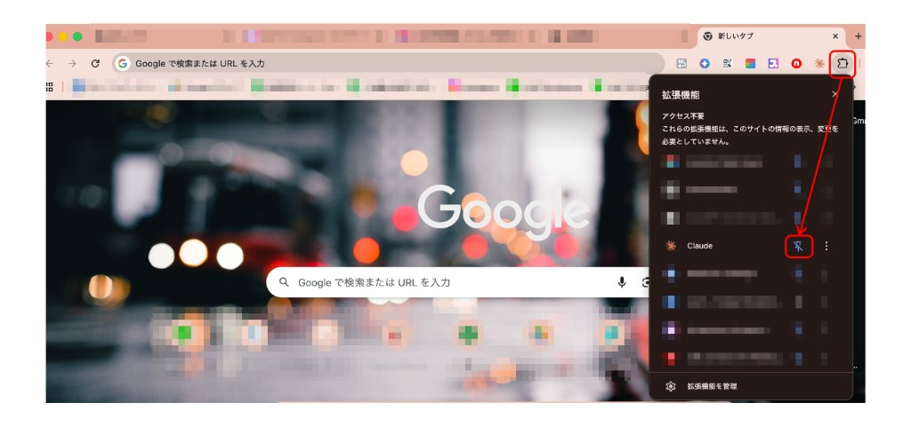
パズルアイコンからメニューを開き、「Claude」をピン留めしてツールバーに出す
パニっくん
最初は「げっ、、」って思ったけど、1つずつ潰していったらできたよ博士！！
ウパ博士
パニっくん、頑張りましたね！これで準備は整ったので、早速やっていきましょう！！
5-3. 実行手順
ウパ博士
下記のステップに従って、実際に手を動かしながらやってみましょう！
- ①Google Chromeを起動
- ＊Claude in Chromeを起動させるためには、あらかじめGoogle Chromeを開いておく必要があります
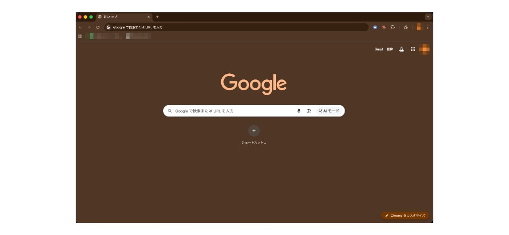
Chrome を開いた状態の画面例（新しいタブ） - ②Claude デスクトップアプリを開き、Coworkに切り替える
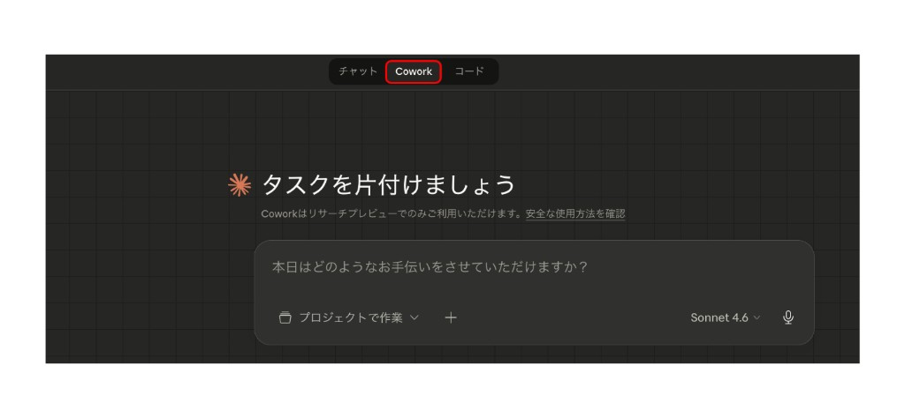
- ③次のプロンプトをそのままコピペします。貼り付けると、右下に「始めましょう」というボタンが出るのでクリックする。クリックすると、プロンプトの内容に従って、Coworkが作業を開始。Coworkが示す計画・確認があれば、指示に従います。
# 役割 あなたはGoogleスプレッドシートのデータをもとに、直属の上司向けにわかりやすい業務日報を書く専門家です # GoogleスプレッドシートURL https://docs.google.com/spreadsheets/d/1jLeWcWGXZqk1sg2jcnoWHj0LFazURGs4QW-m4pUKr50/edit?usp=sharing # 文体 ビジネス文書として自然な敬体（です・ます）にそろえてください。口語（例：「〜したよ」）や、カンマや括弧だけで業務を次々につなげた一続きの長文は避けてください。 # 通知先 この Cowork タスクの会話に、完成した日報の全文を返してください。 # 禁止事項 日報に名前は書かないでください # やってほしいこと Claude in Chrome を使って、表示中のGoogleスプレッドシートを読み取り、1行目を列見出しとし、2行目以降のデータ行のみを根拠に、職場に提出・共有できる体裁の業務日報として書き起こしてください。
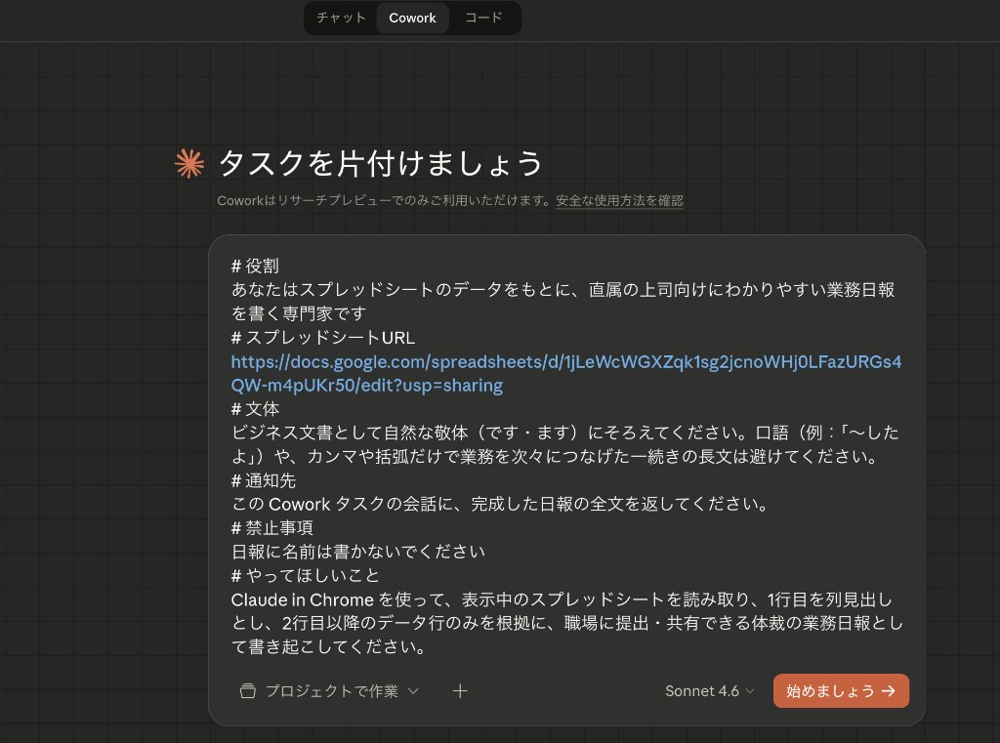
同じ内容を Cowork に貼り付けたあとの画面例 - ④Coworkの回答をチェック
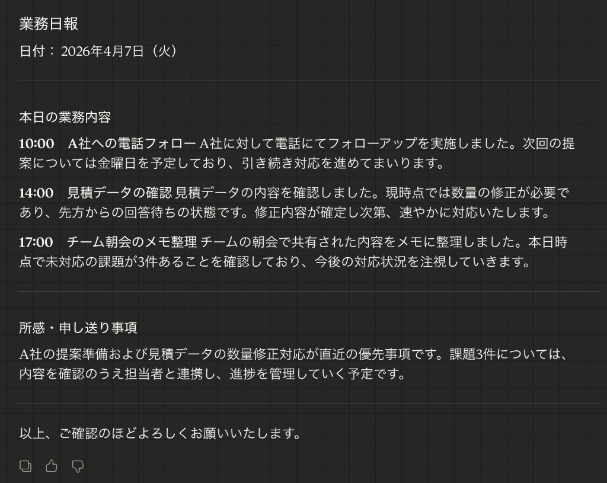
Cowork が日報を返したあとの画面例（実際の表示）
パニっくん
おおおーーーー！！！博士のいった通りにやったらできたよ！！！Cowork すごい！！！！
ウパ博士
よくできましたね。勢いはそのままで大丈夫です。一度深呼吸して、返ってきた日報を読み返してから提出すると、さらに安心ですよ。
第6章：報告の自動化
パニっくん
待って博士！博士はチャットツールへの報告まで自動化してたじゃん。いまの練習だと日報はCoworkの画面に返ってきただけで……報告まで自動化するには、どうすればいい？
ウパ博士
いいところに気づきましたね。実際に私は報告まで完全自動化しています。ここからは、私が普段業務で使っているチャットツール「Slack」を例として自動化する手順について説明していきましょう。
6-1. チャットツールへ送る方法
ウパ博士
手順は次の通りです。小難しい設定は1つもないので安心してください。
- ①コネクタを開く
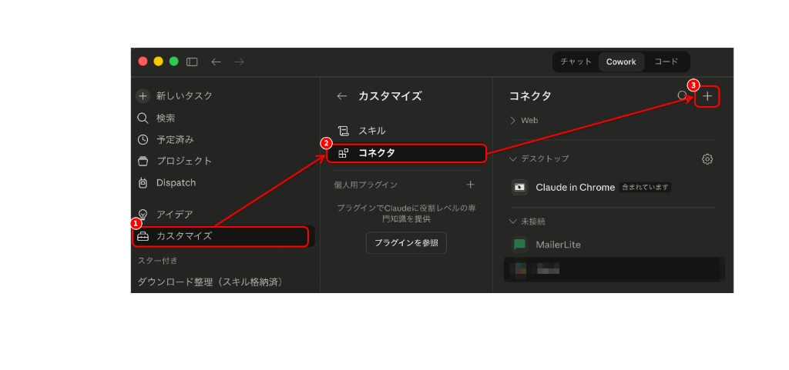
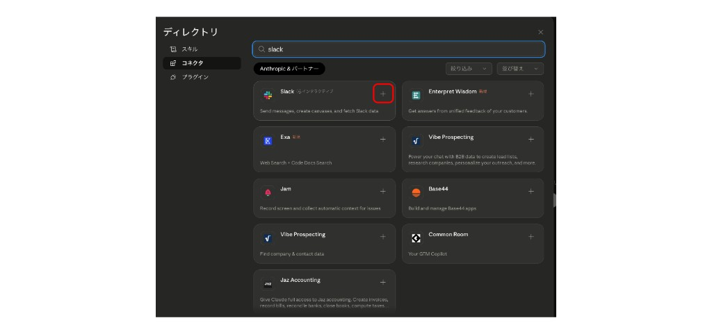
- ③「許可する」を選択
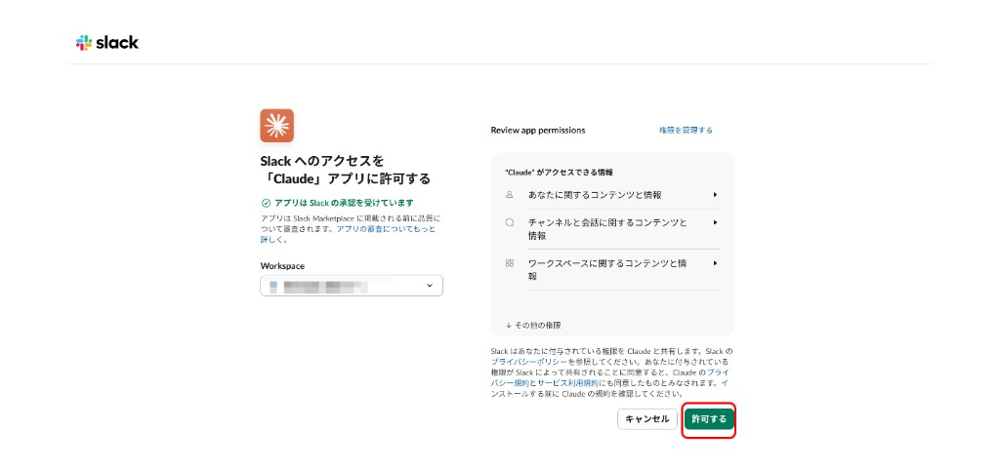
- ④Coworkに入力するプロンプトを修正
# 役割 あなたはGoogleスプレッドシートのデータをもとに、直属の上司向けにわかりやすい業務日報を書く専門家です # GoogleスプレッドシートURL https://docs.google.com/spreadsheets/d/1jLeWcWGXZqk1sg2jcnoWHj0LFazURGs4QW-m4pUKr50/edit?usp=sharing # 文体 ビジネス文書として自然な敬体（です・ます）にそろえてください。口語（例：「〜したよ」）や、カンマや括弧だけで業務を次々につなげた一続きの長文は避けてください。 # 通知先 「Slackの⚪︎⚪︎チャンネル」に、完成した日報の全文を返してください。 # 禁止事項 日報に名前は書かないでください # やってほしいこと Claude in Chrome を使って、表示中のGoogleスプレッドシートを読み取り、1行目を列見出しとし、2行目以降のデータ行のみを根拠に、職場に提出・共有できる体裁の業務日報として書き起こしてください。
パニっくん
なるほど、思った以上に簡単だ。これならできそう！！！
ウパ博士
その通りです。「AIで自動化」と聞くと身構えてしまいますが、何一つ難しいことはありません。1つ1つ進めていけば誰でもできるようになります。
6-2. 同じプロンプトを毎回使わないために
パニっくん
でもさあ……あの長い依頼文、毎回コピペするのも地味にしんどいよ、、、、何かいい方法はないの？？
ウパ博士
そうですよね。確かに毎回長文のプロンプトを入力するのは面倒くさいです。そんな時は、「スキル」というAIへの指示書にまとめておく方法があります。ただ、今日紹介すると、情報量が多くなりすぎて、何がなんだかわからなくなってしまうと思うので、今日はここまでにしましょう！「スキル」については今後の無料特典で触れていくので、ご安心ください。
パニっくん
わかった！！！今日だけでも随分多くのことができるようになったし、、、俺これからも博士についていくよ！！！！！
ウパ博士
ふふ、その意気ですね、パニっくん。今日ここまでできたなら、もう十分、立派な一歩です。迷ったら立ち止まって大丈夫。私も、これからもそばで応援していますから。